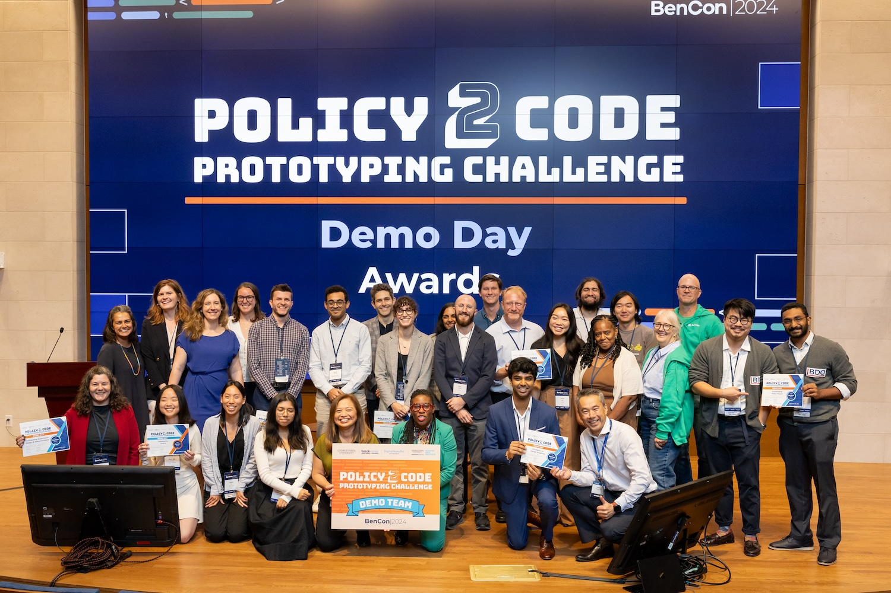
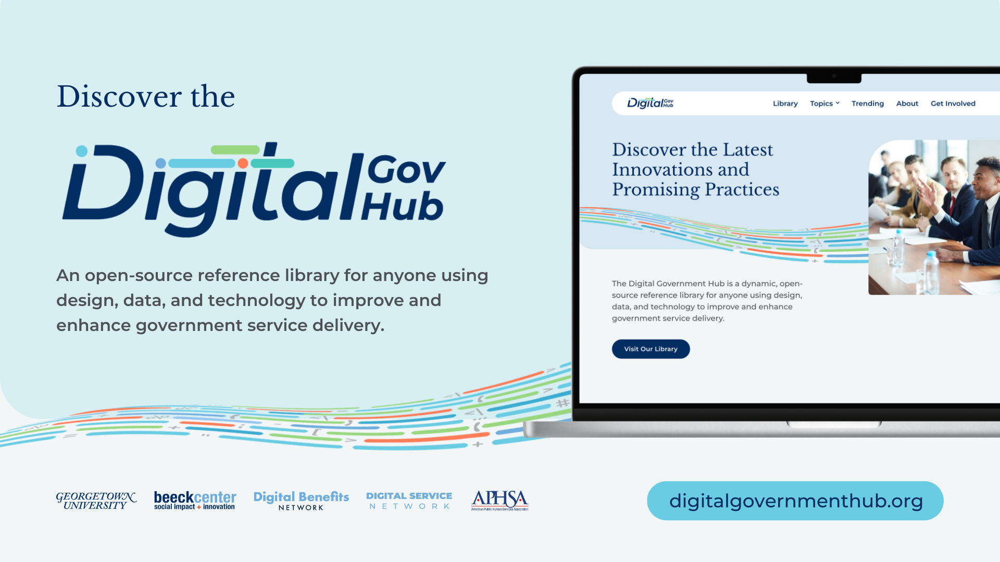
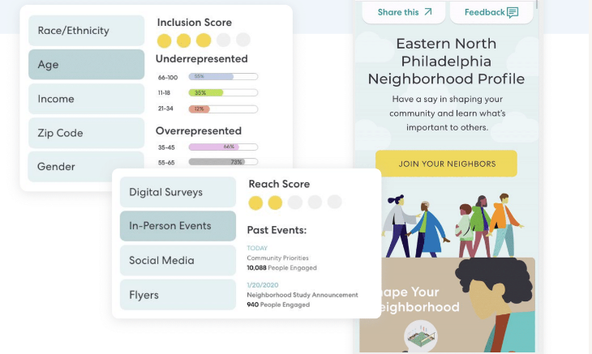

Projects
Throughout my career, I've worked across sectors to design service experiences and community participation, craft strategy and policy, create digital products, and build teams and capacity. I enjoy starting new initiatives, prototyping ideas, and driving change in complex environments.
The Latest
I’m currently building professional networks and tools for practitioners using design and technology to improve how public services are delivered.

Digital Benefits Network
The Digital Benefits Network supports government in delivering public benefits services and technology that are accessible, effective, and equitable in order to ultimately increase economic opportunity.
We work with people who design, deliver, administer, use, and influence public benefits. We work across key benefits programs including food and nutrition (SNAP, WIC), health (Medicaid/CHIP), cash assistance (TANF, basic income), child care, and unemployment insurance (UI) to identify shared challenges and opportunities, and to amplify strategies to enable equitable and effective implementation. We explore current and near-term challenges, while also creating space to envision and explore future policies, services, and technologies.
Read more about our work in our 2023 Year in Review and 2024 Year in Review.

Action-Oriented, Foundational Research
The Digital Benefits Network develops responsive and actionable resources based in credible research and analysis to understand the latest insights, identify promising practices, fill foundational research gaps in the ecosystem, and envision where technology is headed in benefits delivery, including co-creating proofs of concept and standards to inspire what’s possible and advance shared visions for equitable service delivery.
Read more about my research on the Writing + Publications page.

Digital Benefits Leadership Council
The Digital Benefits Network supports coordination and deep listening across the ecosystem to align and collaborate on work, and set ambitious goals. Our Digital Benefits Leadership Council gathers executives from ten civic technology nonprofit organizations for sharing strategies, identifying common challenges, and fostering opportunities for collaboration.
Digital Benefits Network
The Digital Benefits Network supports government in delivering public benefits services and technology that are accessible, effective, and equitable in order to ultimately increase economic opportunity.
We work with people who design, deliver, administer, use, and influence public benefits. We work across key benefits programs including food and nutrition (SNAP, WIC), health (Medicaid/CHIP), cash assistance (TANF, basic income), child care, and unemployment insurance (UI) to identify shared challenges and opportunities, and to amplify strategies to enable equitable and effective implementation. We explore current and near-term challenges, while also creating space to envision and explore future policies, services, and technologies.
Read more about our work in our 2023 Year in Review and 2024 Year in Review.
Action-Oriented, Foundational Research
The Digital Benefits Network develops responsive and actionable resources based in credible research and analysis to understand the latest insights, identify promising practices, fill foundational research gaps in the ecosystem, and envision where technology is headed in benefits delivery, including co-creating proofs of concept and standards to inspire what’s possible and advance shared visions for equitable service delivery.
Read more about my research on the Writing + Publications page.
Digital Benefits Leadership Council
The Digital Benefits Network supports coordination and deep listening across the ecosystem to align and collaborate on work, and set ambitious goals. Our Digital Benefits Leadership Council gathers executives from ten civic technology nonprofit organizations for sharing strategies, identifying common challenges, and fostering opportunities for collaboration.

Communities of Practice
The Digital Benefits Network hosts topical communities of practice to offer peer spaces to explore and solve for near-term and long-term challenges in topics including Rules as Code and digital identity, with unique offerings such as the Policy2Code Prototyping Challenge to foster open experimentation and sharing in the ecosystem.

Digital Government Hub
The Digital Government Hub is a dynamic, open-source reference library for anyone using design, data, and technology to improve and enhance government service delivery. It is curated and maintained by the Beeck Center for Social Impact + Innovation at Georgetown University. From an early prototype of a reference library called the Civic Design Library, we iterated and enhanced to the Digital Benefits Hub in partnership with the American Public Human Services Association, which then grew into the Digital Government Hub which hosts 1,500+ resources from more than 500 organizations.
Teams and Tools for Service Transformation
I’ve built design and product teams and culture within organizations to transform how services are delivered.

NYC Service Design Studio
The Service Design Studio at the NYC Mayor’s Office for Economic Opportunity provides a central resource for expertise and best practices in service design to support public servants. It is the nation’s first municipal service design studio and is dedicated to making public services for low-income residents as effective and accessible as possible. The Studio team provides design consulting services, trainings, and event programming for New York City government agencies.
NYC Service Design Studio
The Service Design Studio at the NYC Mayor’s Office for Economic Opportunity provides a central resource for expertise and best practices in service design to support public servants. It is the nation’s first municipal service design studio and is dedicated to making public services for low-income residents as effective and accessible as possible. The Studio team provides design consulting services, trainings, and event programming for New York City government agencies.

Civic Service Design Tools + Tactics
Civic Service Design Tools + Tactics is an introduction to service design for public servants, and a set of practical ways to include design methods in their work. The toolset includes a book, website, and binder.
NYC Opportunity Product Team
The Digital Product Team at the Mayor’s Office for Economic Opportunity conducts user research, creates user experiences, and works closely with internal and vendor technology teams to prototype, develop, and set ongoing strategy for our portfolio digital services. The team combines agile and human-centered methodologies, while also working within enterprise standards and systems.

Build with NYC
Attracting new skills to government requires new tools for recruitment. Build with NYC is a lightweight recruiting website than openly shares NYC Opportunity roles in a digital-first format. In addition to recruiting and hiring full time staff, I established the NYC Opportunity apprenticeship program to expose undergraduate, graduate, and recently graduated students to doing product and design work inside government and allow us to scale our practice.
Digital Products
I've led extensive product design and development from early prototypes through enterprise deployment. At the NYC Mayor’s Office for Economic Opportunity, I led the strategy and delivery of the digital product portfolio, including redesign and redevelopment of legacy products and building new applications and services. Previously, I designed digital platforms, experiences, and services for corporate and cultural clients.

ACCESS NYC
ACCESS NYC is website that New Yorkers can use to determine their potential eligibility for over 40 city, state, and federal public benefit programs. It was redesigned by NYC Opportunity through an iterative prototyping process that engaged residents, social workers, case managers, and agency staff. ACCESS NYC has 10-step screening process, plain-language program information, content in eleven languages, a location finder, and an accessible, mobile-responsive design.
It is the NYC’s first website to be fully compliant under Local Law 30, which requires documents and services distributed to the public by City agencies be made available in 11 languages. The website is open source and the code is available on Github. Additionally, it is supported by a open source design system, content API, and rules engine.

Growing Up NYC & Generation NYC
Growing Up NYC, in partnership with the City’s Children’s Cabinet, brings the City’s family- and child-related resources together in a mobile-responsive, accessible platform to make it easier for parents to raise strong, healthy children. Initially launched in 2016, Growing Up NYC features easy-to-read age guides with developmental milestones and parenting tips, over 70 City, state, and federally funded benefits and programs, and local events and activities.
Following the success of Growing Up NYC, we built a companion website for teens and young adults, who as they became more independent would benefit from more accessible information. More than 100 young people representing a cross-section of New Yorkers, including LGBTQI youth, co-designed Generation NYC.
Benefits and Programs API
Working with and simplifying complex data and information to improve access to services has been a core component of my work. The Benefits and Programs API provides benefit, program, and resource information for over 40 health and human services available to NYC residents. The data is kept up-to-date, including the most recent applications, eligibility requirements, and application dates. Information in this dataset is used on ACCESS NYC,Growing Up NYC, Generation NYC and published to NYC Open Data.

Collab
Collab is a prototype concept for a next generation toolkit for equitable, participatory, and efficient neighborhood planning and development. Traditional community engagement processes in planning and development do not garner representative participation. These local decisions incentivize opposition that has become fraught with mistrust and miscommunication, causing expensive project delays or cancellations that prevent communities from reaping the benefits of development and growth. The Collab Toolkit offers a new set of digital tools and public participation processes to bring government, developers and communities into a shared space for inclusive, authentic engagement.

talk@TED
talk@TED is a video recording and display environment created for GE at the TED 2010 conference. Participants responded to prompts via a touchscreen video recording experience inside glowing towers that played back their creations. Collective responses followed TED talks on the TED website after the conference.

330 Hudson
330 Hudson Street creates an immersive media installation in the lobby of a renovated office building.
1 Times Square
Digital media and interactive software design for new 35-foot LED sign at 1 Times Square

National Mall Experience
The National Mall Experience is a concept design on behalf of the Trust for the National Mall for a new educational experience across the National Mall, including a mobile platform, kiosks, visitor center, and programmatic activities.
Inclusive Social Infrastructure and Service Delivery
My core practice is as a service designer developing deep understanding and proposing enhancements to service delivery and the creation of new service experiences. I believe services and places must be shaped through equitable particpation, and we can proactively plan for social infrastructure as we design the future.

HOME-STAT
As part of HOME-STAT, the most comprehensive street homeless outreach effort in any U.S. city, the Service Design Studio at the Mayor’s Office for Economic Opportunity documented the journey from street to home for homeless residents. Our team’s work influenced service enhancements, policy, performance management, and technology through the journey map and Stakeholder Research Insights Report. HOME-STAT has also served as a pivotal example of delivering service design that resonates with both internal and external audiences.
Read the Case Study
Sidewalk Toronto
The Sidewalk Toronto project aimed to advance a new model of inclusive urban development along Toronto's eastern waterfront, striving for the highest levels of sustainability, economic opportunity, housing affordability, and new mobility. Within the social infrastructure proposal, the civic life strategy defined physical spaces, digital services and programming to engage communities in decision making, relationship building, and interactions with local organizations and government.

Queensbridge Connected
The Service Design Studio worked on the City’s $10 million initiative to bring free broadband service to five New York City Housing Authority (NYCHA) housing developments, starting with Queensbridge Houses. The Studio engaged Queensbridge residents, nonprofit providers, and City agency staff in the research and prototype testing process to arrive at solutions for connecting and logging in, and other aspects of the service, including a community website.
Sandy Storyline
Sandy Storyline is a participatory documentary that highlights the voices and faces of people affected by Hurricane Sandy, bringing the human impact of this disaster into national conversations about economic inequality, climate change, infrastructure development and the culture of coastal cities in America. By providing people a platform to share their own stories, we hope to contribute to a post-Sandy reconstruction process that is equitable and sustainable for communities, local economies and the environment.